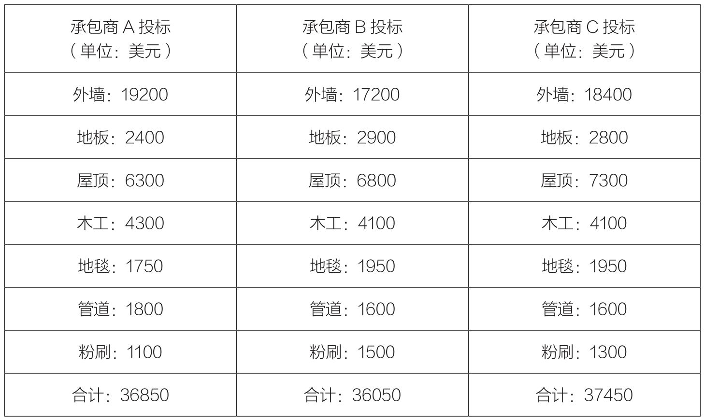

“摘樱桃”是一种买家可以用来对付卖家的有效手段，会给卖家带来毁灭性的打击。当然，如果卖家是一名优势谈判高手，他对自己的选项了如指掌，那就另当别论了。假设你正准备翻修自家房屋，打算在车库上加盖一层，打造一间办公室。为此，你同时找了3家承包商，让他们报价，同时要求他们在报价单上列出明细。

你会选择哪家？报价36850美元的承包商A、报价36050美元的承包商B，还是报价37450美元的承包商C？如果每家条件都差不多的话，你很可能要选价格最低的。也就是说，假如你不在乎工艺水平、可靠性、开工日期、竣工日期，以及建材质量和分包商水平，你显然会选择承包商B。然而，你要考虑的远远不只有价格，还有诸多别的因素，这样一来，最适合你的选择或许就是报价最高的。
精于“摘樱桃”的高手会趁机大显身手。他会直接找到承包商B，说道：“你已接近我的要求了，但你们在地板和木工上的报价分别比A高出了500美元和200美元。如果你们愿意在这两项上向承包商A看齐，我就把这活给你们。”这会导致总承包商跑去地板和木工活儿的分包商那里，要求他们重新报价。这下你该明白为什么承包商都不愿意在报价单上列出明细了吧？
你还可以在对方报价条款上挑三拣四。比如你去乡下买块地，卖方要价10万美元，首付20%，余款分10年付清，年息10%。你或许会要求对方针对全现金交易报一个最低价。如果一次付清，他可以把价格降到9万美元。然后你又问，假如采用首付50%的方式，余款年息是多少。对方说7%。然后你就可以用“摘樱桃”的方式挑出两种交易方式中你最喜欢的部分，提出按全价9万美元、首付20%支付，余款按年息7%支付。
毫无疑问，信息是有效运用“摘樱桃法”的关键，而且它需要时间。无论如何，当你准备为公司采购一套新设备时，你总会多方询问，收集尽可能多的信息，然后才做出最终的决定。你会打电话给多家供应商，邀请他们的销售人员来给你做演示。在这个过程中，你会发现每个公司都有各自的优势，一家公司的产品性能有独特之处，一家公司的产品价格最低，而另一家的售后服务比较吸引人。于是在了解过所有相关情况之后，你最终结合各家之长，制订出了一套最为理想的采购方案。
随后你找到最喜欢的那家，说：“我想买你们的设备，只是我希望你们提供更长的质量保证期，或者你们能更快交货。”通过这种方式，你就设定了自己最想要的交易类型和合同类型。买方应该全力争取采用列出明细的合同，而卖方应该尽量避免这种模式。在我看来，“摘樱桃法”是一种缺德手法，行凶者不太可能对他认识和信任的人下手，更可能会对一个相对陌生的人下手。卖家可以通过与买家建立良好的个人关系来阻止这种策略的实施。
还有个办法可以对付想“摘樱桃”的人，那就是先发制人。比如你是一个承包商，正与一个房主联系，想揽下房屋装修的活儿。你知道她打算联系镇子里的其他承包商。你该如何先发制人？答案是你要做到比你的客户更了解竞争对手的情况。房主说：“我想在最后决定之前再了解一下别人的情况。”
你回答说：“我绝对赞同你这样做。”总是先同意再说，对吧？无论你的客户提出怎样的反对意见，甚至是很荒谬的建议，作为一名销售人员，你都应该先顺着客户说，然后再想办法扭转对方的观点，“我绝对赞同你。在决定之前，你确实应该了解一下其他公司的情况。不过呢，我可以帮你节省些时间。你和ABC建筑公司的泰德·史密斯谈过了吗？他采用的XYZ橱柜有这样、这样，还有这样的特点，唯独缺乏那样的特点。还有，如果你和购物中心里面的国家百货公司联系的话，负责接待你的销售人员将是弗雷德·哈里森，他会告诉你这样的产品型号……”
等你介绍完所有情况，她认识到原来你对竞争对手的情况了如指掌，她心想：“他居然知道这么多，既然这样，我为什么还要浪费时间去一个一个地谈呢？”
为了防止自己免受“摘樱桃法”的伤害，你始终要在让步之前，考虑对方都有哪些选择。对方的选择余地越小，你的权利就越大。如果你作为卖家，拒绝降价，你就要想办法让买家在你的竞争对手那里得到更多的报价，或者提高买家从多个供应商那里进行采购的难度。在房屋翻修的实例中，这将意味着房主不得不绕过你这个总承包商，寻求与每个分包商分别签订合同。这可能需要对方了解更多的知识或专业技能，产生额外的工作和压力，从而使节省下来的费用显得很不划算。
要点备忘
· 1．如果你是买主，争取获得附带明细的投标。
· 2．力求对方在每个细分项目都报出最低价。
· 3．如果你是卖主，尽可能摸清你竞争对手的情况，让客户认识到没必要再浪费时间去一一商谈。
· 4．梳理对方究竟有哪些选项。当你比对方有更多选项时，你在谈判中就掌握了更大的主动权。